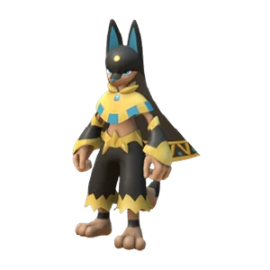
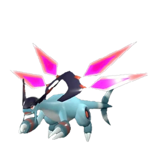

Сравнение
Анубис или Джетрагон?
Победитель по каждой цифре подсвечен. Наведи на пала, чтобы он ожил: двигается только один.
№139

Анубис
Земля
Слабость: ТраваХранитель пустыни
VS
№202

Джетрагон
Дракон
Слабость: ЛёдВоздушные ракеты
01 · Цифры
Характеристики
120
Здоровье
115
130
Атака
140
100
Защита
120
1000
Спринт
3300
10
Редкость
20
02 · База
Работа
6
Добыча
—
6
Ручная работа
—
—
Сбор
8
4
Транспортировка
—
03 · Итог
Кого брать
На базу — АнубисРучная работа 6 и добыча 6 против 0/0
В бой и полёт — ДжетрагонАтака 140 против 130, спринт 3300 против 1000